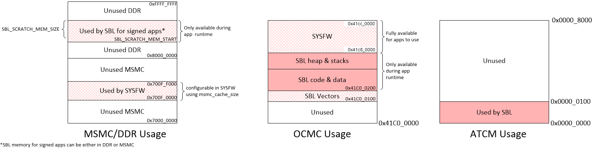
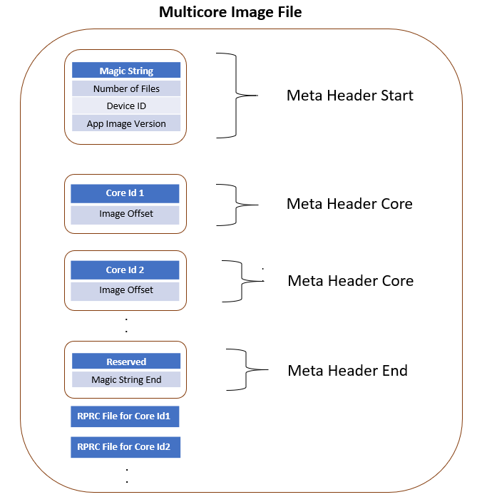
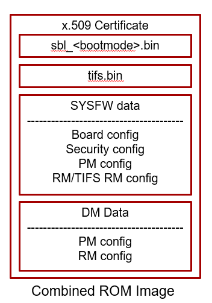

5.2. J721E SBL¶
5.2.1. Introduction¶
The Secondary Bootloader (SBL) for J721E initializes the execution environment for multi-core applications and this can be used to demonstrate a real world product experience. This section covers additional details including execution sequence, tools and additional flashing instructions.
The SBL is essentially a baremetal application, and it uses many components from the Processor SDK
<PDK>/packages/ti/build : For build infrastructure
<PDK>/packages/ti/csl : For initialization and SoC addresses
<PDK>/packages/ti/board : For board and usecase specific initialization
<PDK>/packages/ti/drv/spi : For reading applications from OSPI flash
<PDK>/packages/ti/drv/udma : For reading data from boot media using DMA
<PDK>/packages/ti/drv/mmcsd : For reading applications from MMC/SD/eMMC
<PDK>/packages/ti/fs/fatfs : For reading files from MMC/SD/eMMC
<PDK>/packages/ti/drv/sciclient : For communicating with DMSC sub-system
<PDK>/packages/ti/drv/uart : For log messages
<PDK>/packages/ti/osal : Primitives required by ti/drv components
The SBL is in turn used by the board framework to load and start diagnostics
Bootloader Execution Sequence
Power On Reset
ROM Bootloader (RBL)
Software pre-programmed in Jacinto ROM memory starts executing
The RBL performs platform configuration and initialization.
It then checks sysboot pins and chooses booting device
The RBL then configures PLL and clock settings for R5, and boot media like eMMC, SD/MMC, OSPI, UART, PCIe, Ethernet etc for reliable boot.
If no valid bootloader found on booting device, the RBL checks for next booting device, based on sysboot pins
It then gets image size and load address by checking the X.509 certificate that is part of the bootloader image.
The RBL then verifies, optionally decrypts and loads the binary to internal memory at the load address specified in the X.509 certificate.
Finally it resets the R5 and passes control to Secondary Bootloader(SBL) running on the R5.
Secondary bootloader(SBL)
User level secondary bootloader(SBL) begins execution from internal memory. It enables ATCM, starts PMU timers for profiling, initializes the MCU, and sets up the stack, heap and globals. It then jumps to main().
Board Initialization is done by calls to Board_init() API.For additional details refer Processor SDK Board Support.
The RAT is setup. Pin MUX and UART console are setup by calling Board_init() API. The system firmware (SYSFW or TIFS) is then loaded from the boot media into the DMSC subsystem.
Once the system firmware is up and running, the rest of the initialization can be done.
This includes optionally using Board_init() to configure PLLs, LPSCs and DDR.
The SBL then loads the application from the boot media. If the image is signed, the application will be copied into a user specified reserved memory, and the SBL will attempt to verify the image by calling system firmware APIs. On HS devices, the boot proceeds only if image verification passes.
The SBL parses application image(s) for each of the core(s) from boot media and scatter loads it to memory.
Once the application is loaded, the SBL communicates with the system firmware to setup the clocks for the core(s) and release it from reset.
The core then starts executing from application entry point.
Variants of SBL
SBL Configuration |
Boot Media |
Boot Type |
Sample Application |
Description |
|---|---|---|---|---|
SBL MMCSD |
MMCSD |
Legacy |
Multicore Boot Test |
Boots the target using an SD card containing bootloader, sysfw and application image |
BootApp RTOS |
Tertiary boot loader which boots main domain cores in stages from SD card |
|||
BootApp Linux |
Tertiary boot loader which boots main domain cores and Linux Kernel in stages from SD card |
|||
BootApp QNX |
Tertiary boot loader which boots main domain cores and QNX in stages from SD card |
|||
SBL OSPI |
OSPI NOR |
Legacy |
Multicore Boot Test |
Boots the target using bootloader, sysfw and application image which are flashed at a particular offset in OSPI NOR |
BootApp RTOS |
Tertiary boot loader which boots main domain cores in stages from OSPI |
|||
BootApp Linux |
Tertiary boot loader which boots main domain cores and Linux Kernel in stages from OSPI |
|||
BootApp QNX |
Tertiary boot loader which boots main domain cores and QNX in stages from OSPI |
|||
SBL UART |
UART |
Legacy |
Multicore Boot Test |
A Serial connection is used for transferring the bootloader binary from PC to target board through XMODEM protocol. The bootloader on execution prompts for application image to transfer through XMODEM. |
SBL CUST |
CUST |
Legacy |
Multicore Boot Test |
Flavor of OSPI SBL with custom flags. With this SBL, user can control the following things
|
SBL eMMC Boot0 |
eMMC Boot0 |
Legacy |
Multicore Boot Test |
Boots the target using bootloader, sysfw and application images which are flashed to a particular offset to eMMC Boot0 partition |
SBL eMMC UDA |
eMMC UDA |
Legacy |
Multicore Boot Test |
Boots the target using bootloader, sysfw and application images which are copied to eMMC UDA partition |
SBL Boot Perf CUST |
OSPI NOR |
Legacy |
Boot Perf Test |
Flavor of OSPI SBL with custom flags.
|
Legacy |
Early CAN Response |
Flavor of OSPI SBL with custom flags.
|
||
SBL XIP 133/166 |
OSPI NOR |
Legacy |
XIP Boot Test |
Different OSPI Configurations |
SBL MMCSD HLOS |
MMCSD |
Legacy |
combined_opt.appimage |
Boots high level OS Linux using an SD card containing bootloader, sysfw and HLOS application image |
combined_dev.appimage |
Boots high level OS U-Boot using an SD card containing bootloader, sysfw and HLOS application image |
|||
SBL OSPI HLOS |
OSPI NOR |
Legacy |
combined_opt.appimage |
Boots high level OS Linux using bootloader, sysfw and HLOS application image which are flashed to a particular offset in OSPI NOR |
combined_dev.appimage |
Boots high level OS U-Boot using bootloader, sysfw and HLOS application image which are flashed to a particular offset in OSPI NOR |
NOTE
RBL requires boot loader (SBL) to be in a special format with the binary image appended to a X.509 certificate. The certificate contains the load address, size and SHA of the bootloader image.
For a detailed description of ROM bootloader and more information on the image format expected by the RBL refer the initialization chapter in the J721E Technical Reference Manual
In addition to the bootloader and application, the DMSC firmware binary is also needed for the SoC to complete the system boot flow.
If building the combined ROM boot image, the DMSC firmware binary is part of the bootloader image itself and is not flashed separately.
The first 256 bytes of the ATCM are reserved by SBL for its use. The SBL initializes the ATCM with 0xFF before it uses it.
If the multicore application image is signed using the TI Dummy Key, instead of a degenerate key (default setting) the same binary can be used on GP and HS devices. For information on the application’s X.509 certificate format, please refer Security X509 Certificate Documentation
When the R5 is released from reset, it will always fetch and execute the first intruction from address 0x0.
5.2.2. Block Diagram¶

5.2.3. Memory Map¶
5.2.4. Directory structure¶
sbl
│
├── board
│ └── k3
│ └── sbl_main.c <= define main() for SBL, board specific init
│
├── build
│ ├── makefile <= makefile for the SBL component
│ ├── boot_app.mk <= makefile to build BootApp examples
│ ├── sbl_boot_test.mk <= Builds SBL single core tests
│ ├── sbl_multicore_boot_test.mk <= Builds SBL multicore boot test which uses single core tests to create multicore image
│ ├── sbl_smp_test.mk <= Builds example app for using SBL lib
│ ├── sbl_mcu0_boot_perf_test.mk <= Builds example app for SBL performance tuning
│ ├── sbl_mcu0_boot_xip_entry.mk <= Builds example trampoline app to demonstrate transitioning to a XIP app from SBL
│ ├── sbl_mcu0_boot_xip_test.mk <= Builds example app to demonstrate XIP execution from XIP capable boot media
│ ├── sbl_img.mk <= builds SBL image that is loaded and executed by ROM code
│ ├── sbl_lib.mk <= Builds sbl library that other apps can link into
│ └── sbl_multicore_smp.mk <= Builds multi-core image from SBL lib eg. test to demonstrate symmetric multiprocessor boot (SMP)
│
├── example
│ ├── k3MulticoreApp
│ | ├── binary
│ │ │ └── [soc]
│ │ │ ├── sbl_boot_test_<board_name>_allcoresTestApp_release.appimage <= SBL loadable board specific sample apps for testing SBL boot flow on GP devices
│ │ │ ├── sbl_boot_test_<board_name>_allcoresTestApp_release.appimage.signed <= SBL loadable board specific signed sample apps for testing SBL boot flow on HS-SE devices
│ │ │ ├── sbl_boot_test_<board_name>_allcoresTestApp_release.appimage.hs_fs <= SBL loadable board specific signed sample apps for testing SBL boot flow on HS-FS devices
│ │ │ └── sbl_baremetal_boot_xip_test_<board_name>_mcu1_0TestApp_release.xer5f.bin <= Binary image that can be eXecuted In Place on XIP capable boot media
| │ ├── [soc]
│ │ │ ├── mcuAmplinker.lds <= Linker command file when TI CGT is used for Asym. Multiproc. boot
│ │ │ ├── mpuAmplinker.lds <= GCC linker command file (for Cortex Axx cores) for Asym. Multiproc. boot
│ │ │ ├── mcuXiplinker.lds <= Linker command file for XIP trampoline app
│ │ │ └── xip_entry.lds <= Linker command file for XIP test case
| │ ├── mcuBootPerfLinker_small.lds <= TI CGT Linker command file for SBL performance tuning example (for boot with MCU domain only)
│ │ ├── mcu[core#]LockStepLinker.lds <= Linker command file when TI CGT is used for R5 lock-step boot
│ │ ├── mpuSmplinker.lds <= GCC linker command file (for Cortex Axx cores) for SMP boot
│ │ ├── xip_entry.asm <= Entry point of XIP trampoline app
│ │ ├── xip_stub.c <= Simple SBL test app that demonstrates transitioning to a XIP app
│ │ ├── sbl_amp_multicore.c <= Simple SBL test that displays UART message
│ │ ├── sbl_amp_multicore_sections.h <= Allows same source to be loaded to different sections for different cores.
│ │ ├── sbl_mcu_0_boot_perf_benchmark.c <= SBL Test to tune boot performance.
│ │ ├── sbl_multicore_a53.asm <= Test case entry point for Cortex-Axx cores
│ │ ├── sbl_multicore_r5.asm <= Test case entry point for Cortex-R5 cores
│ │ ├── sbl_multicore_r5_sections.inc <= Allows same source to be loaded to different sections for different MCUs.
│ │ ├── sbl_printf.c <= Lightweight UART printf function for SBL testing
│ │ ├── sbl_smp_multicore.c <= Simple SBL SMP test that uses SBL lib to reset MPUs
│ │ └── sbl_smp_r5.asm <= Provides dummy override function for __mpu_init for SMP testcase.
│ ├── boot_app
│ │ ├── binary
│ │ │ └── [board]
│ │ │ └── [bootmedia]
│ │ │ ├── sbl_boot_app_<bootmedia>_<*(hs)>_<board_name>_mcu1_0_freertos_TestApp_relese.appimage.* <= BootApp image which boots main domain cores in stages
│ │ │ ├── sbl_boot_app_<bootmedia>_linux_<*(hs)>_<board_name>_mcu1_0_freertos_TestApp_relese.appimage.* <= BootApp image which boots main domain cores and Linux on A72 core
│ │ │ └── sbl_boot_app_<bootmedia>_qnx_<*(hs)>_<board_name>_mcu1_0_freertos_TestApp_relese.appimage.* <= BootApp image which boots main domain cores and QNX on A72 core
│ │ ├── boot_app_main.c
│ │ ├── boot_app_mmcsd.c
│ │ ├── boot_app_mmcsd.h
│ │ ├── boot_app_ospi.c
│ │ ├── boot_app_ospi.h
│ │ ├── boot_app_priv.h
│ │ ├── linker_r5_freertos.lds <= linker file to build BootApp
│ │ ├── r5_mpu_freertos.c <= MPU configurations for BootApp
│ │ ├── soc
│ │ │ └── [board]
│ │ │ ├── boot_core_defs.c
│ │ │ └── boot_core_defs.h
│ │ ├── scripts
│ │ │ └── generate_latepps.sh <= script to generate lateapp images which are multicore images generated from sbl boot test
│ │ └── multicore_images
│ │ └── [board]
│ │ ├── multicore_*stage1.appimage* <= lateapp1, multicore image which boots main R5 cores in stage1
│ │ ├── multicore_*stage2.appimage* <= lateapp2, multicore image which boots DSP cores in stage2
│ │ └── multicore_*stage3.appimage* <= lateapp3, multicore image which boots A72 core in stage3
│ └── eeprom_test
│ ├── sbl_eeprom_test.c <= Simple baremetal application which checks whether EEPROM content is properly copied to DDR or not
│ └── makefile <= makefile to build sbl_eeprom_test
│
│
├── binary <= ROM bootable SBL images for each board/boot media
│ ├── [board]
│ └── [bootmedia]
│ └── bin
│ └── sbl_[bootmedia]_img_mcu1_0_release.tiimage
│
├── lib <= SBL lib for each boot media/board supported
│ ├── [bootmedia]
│ │ └── [board]
│ │ └── r5f
│ │ └── release
│ │ └── sbl_lib_[bootmedia].aer5f
│ └── cust
│ └── [board]
│ └── r5f
│ └── release
│ └── sbl_lib_cust.aer5f
│
├── soc <= SOC specific SBL code
│ └── k3
│ ├── [soc]
| | └── linker.cmd <= Linker file used for generating ROM loadable SBL image.
│ ├── sbl_err_trap.h <= Error loops for SBL
│ ├── sbl_init.asm <= SBL Entry point
│ ├── sbl_misc.asm <= SBL Assembly utility functions
│ ├── sbl_log.h <= SBL logging framework
│ ├── sbl_sci_client.c <= Calls system firmware on DMSC
│ ├── sbl_sci_client.h
│ ├── sbl_slave_core_boot.c <= Code that contains the sequence to release a core from reset
│ ├── sbl_slave_core_boot.h
│ ├── sbl_soc.c <= Cache Ops, PMU init, image verfication, etc & SoC specific code like RAT Init..
│ ├── sbl_soc_cfg.h <= Abstraction layer for hiding SoC level changes from SBL
│ └── sbl_profile.h <= SBL profiling framework
│
├── src <= Common drivers used across SOCs
│ ├── mmcsd
│ ├── emmc
│ ├── hyperflash
│ ├── ospi
│ ├── qspi
│ ├── uart
│ ├── rprc <= RPRC image parser used by SBL
│ └── spi
│
└── tools
├── btoccs
├── byteswap
├── ccsutil
├── combined_appimage <= Creates a "combined_*" .appimage file for booting HLOS images (e.g., ATF,U-boot,Linux)
│ ├── bin
│ │ └── [board]
│ │ ├── base-board.dtb <= Default (example) Linux DTB per platform - to be replaced with desired DTB
│ │ ├── bl31.bin <= Checked-in ATF image from LCPD installers of latest release
│ │ ├── bl32.bin <= Checked-in OPTEE image from LCPD installers of latest release
│ │ ├── Image <= Checked-in Kernel image from LCPD installers of latest release
│ │ ├── u-boot.img <= Checked-in u-boot image from LCPD installers of latest release
│ │ ├── u-boot-spl.bin <= Checked-in A72 SPL image from LCPD installers of latest release
│ │ ├── combined_opt.appimage <= Checked-in image which boots Linux from SBL
│ │ └── combined_dev.appimage <= Checked-in image which boots U-Boot from SBL
│ ├── config.mk <= Configuration make include file. Use this to specify images to include in combined.appimage
│ └── makefile <= combined_*.appimage Makefile
├── BootApp_binaries
│ ├── linux <= These images are used to boot Linux from BootApp
│ │ └── [board]
│ │ ├── atf_optee.appimage <= Checked-in ATF OPTEE appimage
│ │ ├── tidtb_linux.appimage <= Checked-in dtb appimage
│ │ └── tikernelimage_linux.appimage <= Checked-in Linux kernel appimage
│ └── qnx <= These images are used to boot QNX from BootApp
│ └── [board]
│ ├── atf_optee.appimage <= Checked-in ATF OPTEE appimage
│ └── ifs_qnx.appimage <= Checked-in QNX appimage
│
├── multicoreImageGen <= Stitches multiple RPRC images for different cores into a single image
├── out2rprc <= Converts .out into .rprc files, so that SBL can load non-continuous memory sections
├── scripts <= Scripts used by .out generated by CCS projects into SBL loadable images
│ ├── K3ImageGen.bat
│ └── K3ImageGen.sh
└── tiImageGen <= Unused for AM65xx/J721E. Image generation is handled by PDK build framework (<sdk_install_path>/pdk_*/packages/ti/build/)
5.2.5. Image Formats¶
SBL format:
To generate a bootable image, the SBL build uses the x509CertificateGen script to sign the sbl binary with so that the ROM Boot Loader (RBL) can parse it. The image format expected by the RBL has been described in detail in the Image Format Section of the J721E Technical Reference Manual
Note
For HS devices, the SBL and system firmware have to be signed with the MPK. Processor SDK sign SBL and system firmware with a TI Dummy Key on HS device. Use sbl_<bootmode>_img to boot on GP devices and sbl_<bootmode>_img_hs to boot on HS devices. The build system invokes the script <PDK>/packages/ti/build/makerules/x509CertificateGen* which inturn calls OpenSSL to create the X509 certificate.
Note
For compatibility, all signed certificates must include a software revision extension with a minimum value of 1 as ROM will use this to enforce the revision programmed into the device efuses for anti-rollback protection. This default value of 1 is set into the SDK scripts but must be incremented during the lifecycle of the device if or when the efuse value is incremented. See http://software-dl.ti.com/tisci/esd/latest/6_topic_user_guides/otp_revision.html for more details.
Note
For the combined ROM boot image, SBL and system firmware are embedded in a boot image with a single x509 certificate. ROM utilizes the x509 extension ext_boot_info to support this format. The components of this format has been described in detail in the Image Format Section of the J721E Technical Reference Manual
Warning
The TI Dummy Key(s) MUST be replaced by customers during production with their own Private Keys. If the TI Dummy Keys are used in a production system, the system will be open to security attacks. The path of the default (dummy) key used by the signing script for HS devices is <PDK>/packages/ti/build/makerules/k3_dev_mpk.pem
Warning
While SBL and system firmware images signed with the TI Dummy Keys will work on both GP and HS devices, the boot time will be significantly impacted on GP devices. Using SBL signed by TI Dummy Keys on GP devices is only recommended during the prototyping phase - when porting code developed on GP to HS devices.
Application image format:
Two utilities - out2rprc and multicoreImageGen are used to convert an application elf image(s) into an image loadable by the SBL. The structure of a multicore application image is provided below:

RPRC File Header Format
Offset |
Binary value |
|---|---|
0x00000000 |
Magic String(43525052) |
0x00000004 |
Entry Point (Location) |
0x00000008 |
Reserved |
0x0000000C |
Number of Sections |
0x00000010 |
Version |
RPRC Section Header Format
Offset |
Binary value |
|---|---|
0x00000000 |
Load Address |
0x00000004 |
Reserved |
0x00000008 |
Size |
0x0000000C |
Reserved |
0x00000010 |
Reserved |
Multicore boot image format
Meta Header Start
Offset |
Binary value |
|---|---|
0x00000000 |
Magic String (0x5254534D) |
0x00000004 |
Number of Files |
0x00000008 |
Device ID |
0x0000000C |
App Image Version |
Meta Header per Core
Offset |
Binary value |
|---|---|
0x00000000 |
Core ID |
0x00000004 |
Image Offset |
Meta Header Core End
Offset |
Binary value |
|---|---|
0x00000000 |
Reserved |
0x00000004 |
Magic String End (0x444E454D) |
Signed application image format:
To convert the multicore application image into a format that can be verified, the build flow uses the x509CertificateGen script to create a x509 certificate for the app image. Images that have a x509 certificate are called signed images. Signed applications images are mandatory for HS devices, but will work also work on GP devices.
Signed images are automatically detected by the SBL and loaded into a scratch memory area specified during SBL build. The scratch memory area used by default is specified in sbl_lib.mk via the flags SBL_SCRATCH_MEM_START and SBL_SCRATCH_MEM_SIZE. The SBL_SCRATCH_MEM* options can also be specified for custom builds to override the defaults.
The SBL scratch memory is unavailable to applications during app load time, as the SBL is still active. Once the SBL transfers control to the application, this memory is available for app use - in other words SBL_SCRATCH_MEM* is available during app runtime.
For information on the application’s X.509 certificate format, please refer Security X509 Certificate Documentation
5.2.6. Building the SBL and its components¶
This section will cover compiling SBL for GP and HS devices. It will also show how to compile a loadable appimage file from an example application, which can be used as a reference to compile your own custom application.
5.2.6.1. Pre-requisites to Building¶
Set your environment using pdksetupenv.bat or pdksetupenv.sh located in <PDK>/packages directory. Refer to Processor SDK RTOS Building for information on setting up your build environment
NOTE
SBL needs openssl to build. To check if openssl is present, type the following at the linux or windows prompt.
openssl version
To build on Linux, you need to have mono installed.
Refer Build Dependencies for instructions on how to install these tools, if they are not already present on your system.
5.2.6.2. Compiling SBL for GP (General Purpose) Device¶
Compiling the SBL
To build all the SBL components:
cd <PDK>/packages/ti/boot/sbl/build
gmake clean all (for windows)
make clean all (for Linux)
SBL image files are be located at: <PDK>/packages/ti/boot/sbl/binary/
SBL examples are located at <PDK>/packages/ti/boot/sbl/examples/k3MulticoreApp/binary
SBL lib are located at <PDK>/packages/ti/boot/sbl/lib/
Compile time options for the SBL
The SBL supports several compile time options to tweak the SBL to satisfy requirements of ease of use, boot time and size. These can be enabled or disabled by editing sbl/sbl_component.mk
SBL_LOG_LEVEL : Controls amount of SBL logs (on the MCU UART) and system firmware logs(on WAKEUP UART). Varies from 0(no logs) to 3 (all logs)
SBL_USE_DMA : Valid values are 0 (use CPU to access boot media) or 1 (use DMA to access boot media).
SBL_DISPLAY_PROFILE_INFO : At the end of the boot process, displays a log of timestamps at which different SBL profile points are hit. This is useful to see how much time the SBL spends in different functions. SBL_LOG_LEVEL can significantly affect performance numbers.
SBL_ENABLE_PLL : Dials up all the PLLs calling Board_init(). Makes it easier for applications as they no longer have to initialize the PLLs. However, enabling this significantly increases boot time and power consumption. Requires system firmware to be loaded.
SBL_ENABLE_CLOCKS : Enables all the module clocks by calling Board_init(). Makes it easier for applications as they no longer have to enable clocks.
SBL_ENABLE_DDR : Initializes the DDR. At the cost of boot time, this enables applications to run from and use DDR. SBL_ENABLE_CLOCKS and SBL_ENABLE_PLL must also be enabed for this to work. Enabling this option increases the boot time.
SBL_SKIP_MCU_RESET : Jumps to the MCU0 application entry point without resetting the core. Enables faster boot time. Will not change the MCU’s mode (lock-step/split). Application also inherits the MCU state as the SBL left it in.
SBL_ENABLE_DEV_GRP_MCU : Will cause the system firmware to only use MCU domain resources during system firmware initialization. This can be done either to support boot when the main power domain is off, or to save boot time.
SBL_ENABLE_HLOS_BOOT: SBL will take some extra steps to prepare certain peripherals and resources to be handed over for HLOS (e.g., Linux) control from the Cortex-A cores.
SBL_HLOS_OWNS_FLASH : Ensures the SBL will leave the OSPI flash in single SPI mode, so that the MAIN domain Cortex-A code (e.g., HLOS) can reset the flash and take control of it, if needed.
SBL_SKIP_PINMUX_ENABLE : SBL will skip any PINMUX init being done in the bootloader and expect that it will be handled by a subsequent application.
SBL_SKIP_LATE_INIT : SBL will skip calling the SoC Late Init functions, normally contained in SBL_SocLateInit()
SBL_USE_MCU_DOMAIN_ONLY : SBL will configure & boot MCU domain cores ONLY. Saves boot time when configuring & using MCU domain only (especially when testing MCU-only boot or measuring Early CAN response).
The SBL also supports a “custom” build, in addition to standard out-of-box builds. A custom build is a useful way of testing out the effect of different build options - like when optimizing for boot time, or enabling custom usecases like eXecute In Place (XIP) to reduce memory usage.
For an example of how to use such custom builds, please refer to sbl/sbl_component.mk. It shows how to specify a select list of build options while building SBL images and libs.
ROM Combined Image boot
Certain devices (J7200, J721S2, and J784S4) support a combined boot image flow. In this flow, a boot binary blob has both Secondary bootloader (SBL) and System Firmware (SYS-FW) embedded in the boot image with a single X509 certificate. ROM employs a new X509 extension called ext_boot_info. It supports multiple boot components with a single certificate as described in the “Extended Boot Info Extension” of the J721E Technical Reference Manual and below:
To create the combined boot image, simply build an alternate SBL bootloader target with “_combined” (GP device) or “_combined_hs” (HS device) appended to the build target name (only for MMCSD or OSPI boot modes).
SBL Build Target Examples for ROM Combined image boot:
GP device : To boot from SD card, use the “sbl_mmcsd_img_combined” build target. For OSPI boot mode, use “sbl_ospi_img_combined”.
HS device : To boot from SD card, use the “sbl_mmcsd_img_combined_hs” build target. For OSPI boot mode, use “sbl_ospi_img_combined_hs”.
Note :
To create the combined board configurations utilized in the boot image, use make target “sciclient_boardcfg_combined”
The combined boot image flow defaults to using the J7200 ES2.0 TIFS version for J7200 HS variants
ROM does not support the combined boot image flow for J721E
For HS-SE non prime devices, an additional component in ext_boot_info (SYS-FW Inner certificate) is added to the boot image
HLOS boot
The SBL now also supports booting ARM Trusted Firmware (ATF) along with either U-boot or HLOS images (e.g., Linux + DTB) on the Cortex-A cores of the device, when used together with the “combined_appimage” make facility in the SBL tools dir.
To boot the combined.appimage that is produced, simply build an alternate SBL bootloader target with “_hlos” (GP device) or “_hlos_hs” (HS device) appended to the build target name (only for MMCSD or OSPI boot modes).
SBL Build Target Examples for HLOS Boot:
GP device : To boot from SD card, use the “sbl_mmcsd_img_hlos” build target. For OSPI boot mode, use “sbl_ospi_img_hlos”.
HS device : To boot from SD card, use the “sbl_mmcsd_img_hlos_hs” build target. For OSPI boot mode, use “sbl_ospi_img_hlos_hs”.
Note :
base-board.dtb needs to be modified to ensure that SD card filesystem (‘rootfs’) is specified for the Linux filesystem in each case.
For J721E SBL initializes the SERDES and hence the same should be disabled in device tree.
To disable serdes : Add ‘status = “disabled”;’ for serdes0, serdes1, serdes2
SBL Startup
The SBL can specify the R5 configuration (lockstep or split) that ROM needs to use when it starts up the SBL. This info is passed to ROM as a field in the X509 certificate. The value in this field can be controlled by editing the build flag R5_STARTUP_MODE in sbl/build/sbl_img.mk
EFUSE_DEFAULT : SBL will run with the same R5 configuration the boot rom ran in.
SPLIT_MODE : ROM will switch the R5 to split mode before starting the SBL (default).
Enabling/Disabling JTAG on secure devices
JTAG access is controlled using a field in the X509 certificate.
By default, for an easy out of box experience, the Processor SDK enables debug via JTAG on High Secure devices. Leaving JTAG enabled, while making it easy for software development, creates a major security hole in production devices.
To disable/change the level of JTAG access on HS devices, update the value of the debugType field in the signing scripts build/makerules/x509template.txt (when building from windows) and build/makerules/x509CertificateGen.sh (when building from linux).
Valid values are:
0 : Disable all JTAG access (most secure and most restrictive)
1 : Use device defaults (most secure and most restrictive)
2 : Allow debug of non-secure code, when the CPU is running in secure mode, JTAG connectivity will be lost
4 : Allow debug of both secure and non-secure code (least secure and least restrictive). This is the default.
Copying EEPROM Content
SBL copies EEPROM content to DDR
By default SBL copies to 0x90000000, user can also specifies to which address EEPROM content should be copied by passing EEPROM_DATA_DDR_ADDRESS=<address> while building SBL
5.2.6.3. Compiling SBL for HS (High Security) Device¶
This section should be skipped if you are using a GP device.
Compile Non-encrypted SBL for HS Device
The steps to build HS SBL and HS Uniflash Programmer are as below:
cd <PDK>/packages/ti/build
make -s sbl_<bootmode>_img_hs BOARD=$BOARD
where boot mode is mmcsd, ospi, hyperflash, uart and $BOARD is j721e_evm or another valid board which can be listed using **make -s help**
This generates HS SBL images under <PDK>/packages/ti/boot/sbl/binary/<$BOARD>_hs folder
NOTE
Make sure build environment is set up using pdksetupenv if you have not done so when compiling for GP device.
If the make does not succeed, try setting DISABLE_RECURSE_DEPS=no like so: make -s sbl_<bootmode>_img_hs BOARD=$BOARD DISABLE_RECURSE_DEPS=no.
Building HS Uniflash programmer is similar to SBL. Instead provide the make target as “board_utils_uart_flash_programmer_hs”. This generates HS uniflash programmer image under <PDK>/packages/ti/board/utils/uniflash/target/bin/<$BOARD>_hs folder
Compile Encrypted SBL for HS Device
A few additional steps on top of compiling non-encrypted SBL for HS device is necessary when compiling an encrypted SBL.
Open the file <PDK>/packages/ti/build/makerules/x509CertificateGen.sh or x509CertificateGen.ps1 if on Windows.
Edit line 119 of x509CertificateGen to
ENC_BIN=$BIN"-ENC-"$CERT_SIGNinstead ofENC_BIN=$CERT_SIGN"-ENC-"$BINOpen <PDK>/packages/ti/build/makerules/common.mk
Edit line 638 of common.mk that starts with $(SBL_CERT_GEN) -b $(SBL_BIN_PATH) … by adding the flags -e $(PDK_INSTALL_PATH)/ti/build/makerules/k3_dev_mek.txt -y ENCRYPT
Compile encrypted SBL for HS device using the same command used for non-encrypted SBL for HS device
This generates encrypted HS SBL images under <PDK>/packages/ti/boot/sbl/binary/<$BOARD>_hs folder with the same name as non-encrypted HS SBL image.
5.2.6.4. Compiling appimage that can be loaded by SBL¶
In this section we will demonstrate how you can create a SBL loadable appimage from an existing ELF file.
Memory Map Considerations
Applications that the SBL loads must comply generally with the sbl-memory-usage. In the application’s linker command file, care must be taken to not use the first 0x100 bytes of the MCU R5’s ATCM memory, as well as the SBL reserved memory from 0x41C00100 to 0x41C80000, for J7xx devices. If the applications are signed, no loadable sections must be placed in the SBL scratch memory area. The scratch memory can be used at application runtime for stacks, heaps, etc.
Also, the SCISERVER now needs to be started on MCU1_0, as part of the MCU1_0 application. The board configuration space for SBL to leave behind for the SCISERVER in MCU SRAM should be left as reserved, at least until Sciclient_init() has executed on MCU1_0 - it is from 0x41C80000 to 0x41C82000. Similarly, the common header location from 0x41CFFB00 to 0x41D00000 should also be left untouched until Sciclient_init() has finished execution.
NOTE
The local address 0x0 of the MPU is not accessible from the MCU, so any MPU linker command file must not specify any loadable sections in that memory region. The SBL will not be able to access that memory to load code or data.
Compile SBL loadable image from ELF executables
Depending on the usecase, an ELF application executable can be converted into an image that can be loaded by SBL in many ways.
Using CCS: Any project created using the pdkProjectCreate scripts will automatically generate a SBL loadable app, as part of a post-build step.
Using makefiles: Add the following lines to the component’s .mk file
app_name_SBL_APPIMAGEGEN = yes
export app_name_SBL_APPIMAGEGEN
Existing ELF executable: By calling the K3ImageGen script.
Linux Syntax: ./K3ImageGen.sh <CoreID> <.out>
Example:
cd <sdk_install_path>/pdk_*/packages/ti/boot/sbl/tools/scripts/
./K3ImageGen.sh 4 sbl_baremetal_boot_test_<board>_mcu1_0TestApp_release.xer5f
Windows Syntax: K3ImageGen.bat "<CoreID> <.out>"
Example:
cd <sdk_install_path>\pdk_*\packages\ti\boot\sbl\tools\scripts\
K3ImageGen.bat "4 sbl_baremetal_boot_test_<board>_mcu1_0TestApp_release.xer5f"
Multicore Images: Multicore images, as the name suggests, allows the SBL to load applications for multiple cores from a single image. Creating such images involves three steps.
Generate the ELF application executables for individual cores
Convert the ELF executables into intermediate .rprc images
Combine the .rprc images of individual cores to create a single multicore image
To covert any .out into the intermediate .rprc format, execute the following commands
For Linux:
mono <PDK>/packages/ti/boot/sbl/tools/out2rprc/bin/out2rprc.exe input.out output.rprc
For Windows:
<PDK>\packages\ti\boot\sbl\tools\out2rprc\bin\out2rprc.exe input.out output.rprc
To stitch multiple .rprc images into a multicore image, execute the following command
For Linux:
<PDK>/packages/ti/boot/sbl/tools/multicoreImageGen/bin/MulticoreImageGen LE 55 output.appimage <core_id_1> core_1.rprc <core_id_2> core_2.rprc
For Windows:
<PDK>/packages/ti/boot/sbl/tools/multicoreImageGen/bin/MulticoreImageGen.exe LE 55 output.appimage <core_id_1> core_1.rprc <core_id_2> core_2.rprc
NOTE
The linux host environment needs to have mono installed.
The values used for the Core ID and Device ID can be found in sbl/soc/k3/ sbl_slave_core_boot.h
To simply load an ELF without executing it, use CoreID value ONLY_LOAD_ID
If an image for MCU_1 core is provided, the SBL will attempt to switch to split mode.
If only an image for MCU_0 is provided, the SBL will not change the mode of the MCU subsystem.
To enable SMP on the MPU, ie, to get multiple MPUs execute from a single binary from the same address, use one of the following core_ids
MPU1_SMP_ID: The same app binary runs on both cores in MPU cluster 1
MPU2_SMP_ID: The same app binary runs on both cores in MPU cluster 2
MPU_SMP_ID: The same app binary runs all the MPUs
Boot a HLOS+RTOS appimage using the combined_appimage tooling
Creating a combined.appimage file including all images necessary to boot U-boot or HLOS on the SoC’s Cortex-A cores, as well as booting RTOS images on the other remote cores can be done with the following 4 steps:
Modify the sbl/tools/combined_appimage/config.mk file HLOS_BIN_PATH var to point to the desired HLOS images to be booted
Modify the HLOS_BOOT var in the same file to select “development” option (boots to SPL/U-boot) or “optimized” option (boots ATF/OPTEE/Linux)
Modify the RTOS_BIN_PATH var there to point to your RTOS binaries and then list the cores & binaries to be loaded in the vars: IMG1, IMG2, …
Make the combined.appimage output app using the following make command:
make BOARD=<board> GCC_LINUX_ARM_PATH=<path>
Example:
cd <sdk_install_path>/pdk_*/packages/ti/boot/sbl/tools/combined_appimage
make BOARD=<board> GCC_LINUX_ARM_PATH=<sdk_install_path>/gcc-arm-9.2-2019.12-x86_64-aarch64-none-elf
cd bin/<board>
ls *.appimage
Converting ELF executables to executable binary images
Sometimes, for extremely constrained and specialized usecases like ultra-low-latency boot or DDR-less systems, an ELF application executable can be converted into a binary image that can executed directly from the boot media, without loading into internal memory.
As internal memory is always accessible, this mode of execution allows some otherwise mandatory steps steps like DDR initlization or clock initialization to be done later or skipped altogether.
Working with such highly contrained systems require some special steps..
Make sure that the boot media supports eXecuting In Place (XIP).
Use the custom SBL build to select the build options to build a SBL that meets the usecase requirements.
In the linker command file for the application, make sure that all the data sections, stacks, heaps and globals are in internal read/write memory
In the linker command file for the application, make sure that there are no holes in the loadable sections. Such non-contiguous sections can drastically blow up the binary image size, when compared to the ELF executable size.
To generate an executable binary image from the applications ELF file, add the following lines to the component’s .mk file
app_name_SBL_APP_BINIMAGEGEN = yes
export app_name_SBL_APP_BINIMAGEGEN
Compile encrypted SBL loadable image for HS device from ELF executables
An edit to our appimage generation script is necessary to generate encrypted appimage:
Open <PDK>/packages/ti/boot/sbl/tools/scripts/K3ImageGen.sh for Linux or K3ImageGen.bat for Windows
Edit line 88 that starts with “$PDK_INSTALL_PATH/ti/build/makerules/x509… by adding the flags: -e $PDK_INSTALL_PATH/ti/build/makerules/k3_dev_mek.txt -y ENCRYPT
Now the K3ImageGen script generates encrypted appimage instead of non-encrypted appimage. It can still be used like so:
cd <sdk_install_path>/pdk_*/packages/ti/boot/sbl/tools/scripts
./K3ImageGen.sh 4 <path_to_ELF_file>/sbl_baremetal_boot_test_<board>_mcu1_0TestApp_release.xer5f
The generated appimage should be in <PDK>/packages/ti/boot/sbl/examples/k3MulticoreApp/binary/<board>/ directory which also has some ELF files that you can use to test the script.
5.2.7. Testing the SBL¶
SBL provides test applications to demonstrate booting the A53/A72 and R5 cores in both symmetric/lock step & asymmetric/split-mode and other features. The multicore sample application prints a message on the UART for each core. The functionality the different tests exercises are listed below.
sbl_*_boot_test_*_all_coresTestApp_release: A single multicore boot test case that boots each core in the SoC with a separate app. Also tests DDR loading
sbl_*_boot_test_*_xxxx_xTestApp_release.appimage: A simple testcase for booting core xxxx_x (eg. MCU1_0, MPU2_0 etc.)
sbl_*_smp_test_*_all_coresTestApp_release.appimage: A single SMP boot test case that boots MCUs in lock step. The MCU app then uses the SBL lib to boot all the MPUs in SMP mode, ie, all the MPUs execute a single binary from the same address.
sbl_baremetal_boot_perf_*_mcu1_0TestApp_release.appimage: A single MCU1_0 test case that can be used to measure the effect of enabling/disabling the perf. tuning knobs in the SBL for OSPI boot. The size of the test case can be easily modified by changing the values of .space directives in sbl/example/k3MulticoreApp/ sbl_boot_perf_r5.asm to profile for different app image sizes.
sbl_baremetal_boot_xip_test_*_mcu1_0TestApp_release.xer5f.bin: A testcase demonstrating booting an XIP application from OSPI flash. Please refer to sbl/build/ sbl_mcu0_boot_xip_test.mk and the related linker command file, under sbl/example/k3MulticoreApp/j721e/mcuXiplinker.lds, to see how to convert an existing application into an XIP application. The sbl_*_xip_entry_*.appimage works in tandem with sbl_*xip_test_*.xer5f.bin to transition the system from non-xip to xip boot, as the ROM, by default, does not support XIP from boot media. After programming the sbl and syfw, to program both sbl_*_xip_entry_*.appimage and sbl_*xip_test_*.xer5f.bin into OSPI flash, use the following uniflash commands
For Windows:
.\dslite.bat --mode processors -c COM9 -f <PDK>\packages\ti\boot\sbl\example\k3MulticoreApp\binary\<soc>\sbl_baremetal_boot_xip_entry_<board>_mcu1_0TestApp_release.appimage -d 3 -o 100000
.\dslite.bat --mode processors -c COM9 -f <PDK>\packages\ti\boot\sbl\example\k3MulticoreApp\binary\<soc>\sbl_baremetal_boot_xip_test_<board>_mcu1_0TestApp_release.xer5f.bin -d 3 -o 1C0000
For Linux:
sudo ./dslite.sh --mode processors -c /dev/ttyUSB1 -f <PDK>/packages/ti/boot/sbl/example/k3MulticoreApp/binary/<soc>/sbl_baremetal_boot_xip_entry_<board>_mcu1_0TestApp_release.appimage -d 3 -o 100000
sudo ./dslite.sh --mode processors -c /dev/ttyUSB1 -f <PDK>/packages/ti/boot/sbl/example/k3MulticoreApp/binary/<soc>/sbl_baremetal_boot_xip_test_<board>_mcu1_0TestApp_release.xer5f.bin -d 3 -o 1C0000
An example test log for sbl_*_boot_test_*_all_coresTestApp_release is
SBL Revision: xx.xx.xx.xx (MMM DD YYYY - HH:MM:SS)
TIFS(or SYSFW) ver xx.x.x-v20xx.xx (xxx xxx)
MPU1_0 running
MPU1_1 running
MPU2_0 running
MPU2_1 running
MCU1_1 running
MCU1_0 running
MCU1_0 reports: All tests have passed
An example log for sbl_*_smp_test_*_all_coresTestApp_release.appimage is
SBL Revision: xx.xx.xx.xx (MMM DD YYYY - HH:MM:SS)
TIFS(or SYSFW) ver xx.x.x-v20xx.xx (xxx xxx)
MPU SMP boot test
Cores 0 & 1 will boot from 0x801007a0
Cores 6 & 7 will boot in lockstep from 0x70050000
Resetting all ARM cores now...
No of Cortex-A core(s) running: 1
No of Cortex-A core(s) running: 2
No of Cortex-R core(s) running: 3
All tests have passed
An example log for sbl_baremetal_boot_perf_*_mcu1_0TestApp_release.appimage, when the best boot time is reached is
Time elapsed since start of SBL: 8579us
fxn:boot_perf_test_main cycles: 8579974
Attempting board config ...BOARD_INIT_PLL_MAIN ...passed
BOARD_INIT_MODULE_CLOCK_MAIN...passed
BOARD_INIT_DDR...passed
Analyzing run results ....
Boot time is now optimized....
All tests have passed
Profiling info ....
MCU @ 1000000000Hz.
cycles per usec = 1000
fxn: main line:2013079 cycle: 566224 timestamp: 566us
fxn: main line: 261 cycle: 566325 timestamp: 566us
fxn: SBL_SciClientInit line: 461 cycle: 601168 timestamp: 601us
fxn: SBL_SciClientInit line: 474 cycle: 651983 timestamp: 651us
fxn: SBL_SciClientInit line: 489 cycle: 7464480 timestamp: 7464us
fxn: SBL_SciClientInit line: 505 cycle: 10628628 timestamp: 10628us
fxn: SBL_SciClientInit line: 510 cycle: 12529805 timestamp: 12529us
**fxn: SBL_SciclientBoardCfgPm line: 204 cycle: 90 timestamp: 0us
fxn: SBL_SciClientInit line: 515 cycle: 390529 timestamp: 390us
fxn: SBL_SciClientInit line: 522 cycle: 916525 timestamp: 916us
fxn: main line: 345 cycle: 1554351 timestamp: 1554us
fxn: main line: 355 cycle: 2821071 timestamp: 2821us
fxn: main line: 372 cycle: 4353571 timestamp: 4353us
fxn: SBL_OSPIBootImage line: 732 cycle: 5007323 timestamp: 5007us
fxn: SBL_OSPIBootImage line: 739 cycle: 5148927 timestamp: 5148us
fxn: main line: 412 cycle: 7894632 timestamp: 7894us
fxn: main line: 439 cycle: 7894801 timestamp: 7894us
NOTE : Below numbers will be corrupted if SBL_ADD_PROFILE_POINT is added anywhere
------- SBL Boot Performance Info overview -------
RBL Execution time : 8.052ms
SBL : SBL_SciClientInit: ReadSysfwImage : 0.050ms
Load/Start SYSFW : 6.813ms
Sciclient_init : 3.164ms
Board Config : 1.901ms
PM Config : 0.390ms
Security Config : 0.526ms
RM Config : 0.638ms
SBL: Board_init (pinmux) : 1.267ms
SBL: Board_init (PLL) : 1.532ms
SBL: Board_init (CLOCKS) : 0.654ms
SBL: OSPI init : 0.141ms
SBL: Parsing appimage and copy to MCU SRAM & Jump to App: 2.746ms
Misc : 0.035ms
Time taken to boot CAN application from SBL main : 27.909ms
Boot Performance test has passed
The test log for sbl_*_xip_test_*.xer5f.bin is
MCU1_0 running
5.2.8. Boot Modes¶
The SBL supports MMCSD, OSPI, and UART Boot modes. The different boot modes supported for Jacinto is tabulated below.
MMCSD |
eMMC |
OSPI NOR |
OSPI NAND |
UART |
PCIe |
ETH |
HYPERFLASH |
|
J721E EVM |
YES |
YES |
YES |
NO |
YES |
NO |
NO |
NO |
Boot Switch Settings
MMCSD |
eMMC Boot0 |
eMMC UDA |
UART |
OSPI NOR |
No Boot |
|
J721E EVM |
|
|
|
|
|
|
5.2.8.1. Booting Via SD Card¶
Preparing the SD card.
Booting the testcase from SD card.
Preparing the SD card
To boot the target the SD card should be bootable. Follow the steps to Creating bootable SD card in Linux.
To update the SBL with a newer version, copy the sbl image (sbl_mmcsd_img_mcu1_0_release.tiimage) to the SD card. Rename it to tiboot3.bin
Copy the generated application image(*.appimage or *.appimage.signed) to the SD card. Rename it to app
Update the TIFS with a newer version, copy the TIFS system firmware image binary (or, for HS device, use the encrypted TIFS system firmware binary, “tifs-hs-enc.bin”) found in <PDK>/packages/ti/drv/sciclient/soc/V1 to the SD card as tifs.bin.
Booting the testcase from SD card
Insert SD card into the SD card slot of the board.
Refer to the Boot Modes section in the J721E EVM Hardware Users Guide to setup the EVM to boot from MMCSD.
Open a serial communication terminal like TeraTerm, MiniCom on host PC and connect to the MCU UART console port
Power cycle the board to boot the application from the SD card.
The test logs will be displayed on the MCU UART
5.2.8.2. Booting Via eMMC UDA partition¶
Preparing eMMC.
Booting the testcase from eMMC.
Preparing eMMC
Boot the target with the linux SDK. You can find the latest linux here.
Prepare the SD Card with Linux Images. Follow the procedure here.
Copy mksdboot.sh from <Linux_SDK_Install_Directory>/bin to /media/$USER/rootfs/home/root
Change boot mode setting to SD boot mode: SW8: 1000 0010 SW9: 0000 0000
Boot the board
login as root
Run the mksdboot.sh script: ./mksdboot.sh –device /dev/mmcblk0
Run fdisk -l to check if the /dev/mmcblk0 is partitioned
Booting the testcase from eMMC
To update the SBL with a newer version, copy the sbl image (sbl_emmc_uda_img_mcu1_0_release.tiimage) to /media/$USER/rootfs/home/root in the SD card. Rename it to tiboot3.bin
Copy the generated application image(*.appimage or *.appimage.signed) to /media/$USER/rootfs/home/root in the SD card. Rename it to app
Update the TIFS with a newer version, copy the TIFS system firmware image binary (or, for HS device, use the encrypted TIFS system firmware binary, “tifs-hs-enc.bin”) found in <PDK>/packages/ti/drv/sciclient/soc/V* to /media/$USER/rootfs/home/root in the SD card as tifs.bin.
Put the SD Card back to board and boot in SD boot mode: SW8: 1000 0010 SW9: 0000 0000
Copy the images to eMMC partition
mkdir eMMC
mount /dev/mmcblk0p1 eMMC
cp tiboot3.bin eMMC
cp tifs.bin eMMC
cp app eMMC
Change boot mode to eMMC UDA partition and boot the board: SW8: 1000 0000 SW9: 0000 0000
5.2.8.3. Booting Via eMMC BOOT0 partition¶
Flashing images to eMMC.
Booting the testcase from eMMC.
Limitations
Flashing images to eMMC
Create a folder named SBL in boot partition of SD card which is flashed with the linux images. You can find how to flash linux images to SD card in prepare eMMC section under Booting Via eMMC UDA partition.
Copy the sbl image (sbl_emmc_boot0_img_mcu1_0_release.tiimage) to the boot partition of SD card in SBL folder.
Copy the generated application image(*.appimage or *.appimage.signed) to the boot partition of SD card in SBL folder.
Copy the TIFS system firmware image binary (or, for HS device, use the encrypted TIFS system firmware binary, “tifs-hs-enc.bin”) boot partition of SD card in SBL folder.
Insert the SD card into the evm. Boot the evm in SD bootmode: SW8: 1000_0010 SW9: 0000_0000
Halt in uboot and Enter the following commands to download the images from an SD card and write them to the eMMC boot0 partition at respective addresses.
Selecting device 0 (eMMC) and partition 1 (BOOT0)
mmc dev 0 1
Erasing 0x2000 sectors from 0x0. Each sector is of 512 Bytes
mmc erase 0x0 0x2000
Load SBL image to DDR from MMCSD
fatload mmc 1 ${loadaddr} SBL/sbl_emmc_boot0_img_mcu1_0_release.tiimage
Write <size_of_sbl_in_sectors> to 0x0 from DDR
mmc write ${loadaddr} 0x0 size_of_sbl_in_sectors
Load tifs.bin to DDR from MMCSD
fatload mmc 1 ${loadaddr} SBL/tifs.bin
Write <size_of_tifs_in_sectors> to 0x400 from DDR
mmc write ${loadaddr} 0x400 size_of_tifs_in_sectors
Load application image to DDR from MMCSD
fatload mmc 1 ${loadaddr} SBL/application_image
Write <size_of_app_in_sectors> to 0x1400 from DDR
mmc write ${loadaddr} 0x1400 size_of_app_in_sectors
Enable Booting from BOOT0 partition of eMMC
mmc partconf 0 1 1 1
Selecting bus width
mmc bootbus 0 2 0 0
Note : To calculate size of an image in sectors see below example
For example size of image = 409600 Bytes
eMMC sector size = 512 Bytes
Number of sectors = (409600/512)+1 => (0x64000/0x200)+1
size of image in sectors = 0x321
Booting the testcase from eMMC
Change the boot mode to eMMC boot via BOOT0 partition: SW8: 1000 0000 SW9: 0100 0000.
Open a serial communication terminal like TeraTerm, MiniCom on host PC and connect to the MCU UART console port
Power cycle the board to boot the application from the eMMC boot.
The test logs will be displayed on the MCU UART.
Limitations
It can boot the application with the max size of 512000 bytes. If the size of application is more than that you need to pass MAX_APP_SIZE_EMMC=<size_of_image> while building image.
size_of_image can be calculated in the following manner.
For example size of .appimage = 712000 bytes.
MAX_APP_SIZE_EMMC=0xADD40.
Last point in Flashig images to eMMC should be mmc write ${loadaddr} 0x1400 <size_of_image> where size_of_image can be calculated as follows.
For example size of .appimage = 712000 bytes.
eMMC sector size = 512 bytes
Number of sectors = (712000/512) + 1 => (0xADD40/0x200) + 1
size_of_image = 0x56F
5.2.8.4. Booting Via OSPI flash¶
Flash addresses for Images
Booting the testcase from OSPI flash
Flash addresses for Images
tiboot3.bin (SBL) is flashed to address 0x0
<system_firmware_name>.bin (TIFS or SYSFW) is flashed to address 0x80000
<app_name>.appimage (APP) is flashed to address 0x100000
Optional: <xip_app>.bin (XIP.bin) is flashed to 0x1C0000
OSPI PHY tuning data binary must also be flashed to the start of the last flash sector (e.g., usually a 512kB or 256kB size sector)
Note: The file <system_firmware_name>.bin will be tifs.bin for a J7xx device (for HS device, use the encrypted firmware binary, tifs-hs-enc.bin).
Booting the testcase from OSPI flash
Refer to the Boot Modes section in the J721E EVM Hardware Users Guide to setup the EVM to boot from OSPI.
Open a serial communication terminal like TeraTerm, MiniCom on host PC and connect to the MCU UART console port
Power cycle the board to boot the application from the OSPI flash.
The test logs will be displayed on the MCU UART
5.2.8.5. Booting via UART¶
Refer to the Boot Modes section in the J721E EVM Hardware Users Guide to setup the EVM to boot from UART.
Open a serial communication terminal like TeraTerm, MiniCom on host PC and connect to the MCU UART console port
Power cycle the board, the console should show a sequence of CCC being printed
Choose the X-Modem interface and send the SBL that was built for UART. After the transfer is completed, repeat the same steps for the system firmware and the application. You will see notifications to perform these actions.
Note: The system firmware binary will be tifs.bin for a J7xx device (for HS device, use the encrypted firmware binary, tifs-hs-enc.bin).
Warning
If the system firmware binary is not present in the boot media, the boot will fail without displaying any logs on the MCU UART. SBL enables UART logging only after successfully starting the system firmware image. If the system firmware load fails, the RBL will eventually reset the system.
5.2. Booting Via Hyperflash¶
Booting the testcase from Hyperflashflash
Booting the testcase from Hyperflash
Refer to the Boot Modes section in the J721E EVM Hardware Users Guide to setup the EVM to boot from Hyperflash.
Open a serial communication terminal like TeraTerm, MiniCom on host PC and connect to the MCU UART console port
Power cycle the board to boot the application from the Hyperflash.
The test logs will be displayed on the MCU UART
5.2.9. HSM Boot¶
Not supported for this device
5.2.10. EVM Setup for testing SBL¶
For information on board specific requirements like power supply, UART console port connections refer the Hardware User guide of the respective boards.
The configurations needed to setup UART console through a serial terminal application on host PC are listed in the next section.
UART Console Setup
PDK SBL prints messages on the UART Serial Console running on the host. Hence, a serial terminal application (like Tera Term/HyperTerminal/minicom) should be running on the host.
The host serial port must be configured at 115200 baud, no parity, 1 stop bit and no flow control.
Please ensure that the local echo setting for the terminal is turned off.
All SBL prints are routed to the MCU UART
To verify setup is correct, setup the EVM to boot from UART as the Primary Boot Device (refer to J721E EVM Hardware Users Guide ) Power cycle the EVM, and look for the string CCCCCCC on the UART.
5.2.11. How to Guides¶
5.2.11.1. Generate Multicore Appimage¶
Multicore appimage is a combination of rprc files of each core and a multicore header attached to it. Refer Image formats section mentioned above in the same page for more details.
Compiler generates executable which has an extension of .xer5f for R5 cores, .xa72fg for A72 cores, .xe66 for c66x cores and .xe71 for c7x cores.
Generate .rprc files using the executables with the below command:
$(PDK_INSTALL_PATH)/ti/boot/sbl/tools/out2rprc/bin/out2rprc.exe $(PDK_INSTALL_PATH)/ti/binary/<application_name>/bin/<board_name>/<exercutable_name>.xer5f $(PDK_INSTALL_PATH)/ti/binary/<application_name>/bin/<board_name>/<rprc_file_name>.rprc
Generate multicore image using .rprc files with the below command:
$(PDK_INSTALL_PATH)/ti/boot/sbl/tools/multicoreImageGen/bin/MulticoreImageGen LE <device_ID> <path to generate mulicore image>multicore_image.appimage <CORE_ID1> <rprc_file for CORE_ID1> <CORE_ID2> <rprc_file for CORE_ID2> ….
NOTE:
device_ID is 55 for all jacinto devices
Find the CORE_ID’s in $(PDK_INSTALL_PATH)/ti/build/makerules/platform.mk file
Any application which is running on a core other than mcu1_0 needs to run sciserver_test_app on mcu1_0 to serve the sciclient calls
5.2.11.2. Sign Appimage¶
For HS devices SBL authenticates the appimage before booting the appimage.
Appimage should be signed with cust mpk key to boot from HS-SE devices and singed with rom degenarate key to boot from HS-FS devices.
Use below command to sign the appimage to boot from HS-SE devices
$(PDK_INSTALL_PATH)/ti/build/makerules/x509CertificateGen.sh -b $(appimage_path).<appimage_name>.appimage -o $(appimage_path).<appimage_name>.appimage.signed -c R5 -l 0x41C00100 -k $(PDK_INSTALL_PATH)/ti/build/makerules/k3_dev_mpk.pem
Use below command to sign the appimage to boot from HS-FS devices
$(PDK_INSTALL_PATH)/ti/build/makerules/x509CertificateGen.sh -b $(appimage_path).<appimage_name>.appimage -o $(appimage_path).<appimage_name>.appimage.hs_fs -c R5 -l 0x41C00100 -k $(PDK_INSTALL_PATH)/ti/build/makerules/rom_degenerateKey.pem
Options while signing appimage
-b : bin file that needs to be signed
-o : name of the final output file
-c : cert_type(target core on which image would be running)
-l : load address of the bin file
-k : signing key file with given key value
5.2.11.3. Boot from GP device¶
To boot from GP device, three images are needed i.e
SBL image which is signed with rom degenerate key
system firmware image (tifs) which is neither encrypted nor signed
application image (.appimage) which is not signed
Build SBL image based on the boot media
To boot from OSPI, use below command to build SBL image
make sbl_ospi_img SOC=<soc_name> BOARD=<board_name> CORE=mcu1_0 -sj
To boot from MMCSD, use below command to build SBL image
make sbl_mmcsd_img SOC=<soc_name> BOARD=<board_name> CORE=mcu1_0 -sj
Use image with .tiimage extenstion to boot
Use tifs.bin present in the specified folder
For J721E, find tifs.bin at <pdk install path>/packages/ti/drv/sciclient/soc/V1/
For J7200, find tifs.bin at <pdk install path>/packages/ti/drv/sciclient/soc/V2/
For J721S2, find tifs.bin at <pdk install path>/packages/ti/drv/sciclient/soc/V4/
For J784S4, find tifs.bin at <pdk install path>/packages/ti/drv/sciclient/soc/V6/
Build application to run. Use below command to build udma_memcpy application
make udma_memcpy_testapp_freertos SOC=<soc_name> BOARD=<board_name> CORE=mcu1_0 -sjUse image with .appimage extension to boot from GP device
Refer Boot from OSPI section in this page to boot form OSPI
Refer Boot from MMCSD section in this page to boot from MMCSD
5.2.11.4. Boot from HS-SE device¶
To boot from HS-SE device, three images are needed i.e
SBL image which is signed with customer(dummy) MPK key
system firmware image (tifs) which is encrypted with TI MEK and signed with TI MPK and then again signed with customer(dummy) MPK key
application image (.appimage) which is signed with customer(dummy) MPK key
Build SBL image based on the boot media
To boot from OSPI, use below command to build SBL image
make sbl_ospi_img_hs SOC=<soc_name> BOARD=<board_name> CORE=mcu1_0 -sj
To boot from MMCSD, use below command to build SBL image
make sbl_mmcsd_img_hs SOC=<soc_name> BOARD=<board_name> CORE=mcu1_0 -sj
Use image with .tiimage extenstion to boot
Use tifs.bin present in the specified folder
For J721E, find tifs-hs-enc.bin at <pdk install path>/packages/ti/drv/sciclient/soc/V1/
For J7200, find tifs-hs-enc.bin at <pdk install path>/packages/ti/drv/sciclient/soc/V2/
For J721S2, find tifs-hs-enc.bin at <pdk install path>/packages/ti/drv/sciclient/soc/V4/
For J784S4, find tifs-hs-enc.bin at <pdk install path>/packages/ti/drv/sciclient/soc/V6/
Note : For different revisions of sillicon if keys changed then name of tifs will get changed
Build application to run. Use below command to build udma_memcpy application
make udma_memcpy_testapp_freertos SOC=<soc_name> BOARD=<board_name> CORE=mcu1_0 -sjUse image with .appimage.signed extension to boot from HS-SE device
Refer Boot from OSPI section in this page to boot form OSPI
Refer Boot from MMCSD section in this page to boot from MMCSD
5.2.11.5. Boot from HS-FS device¶
To boot from HS-FS device, three images are needed i.e
SBL image which is signed with rom degenerate key
system firmware image (tifs) which is encrypted with TI MEK and signed with TI MPK
application image (.appimage) which is signed with rom degenerate key
Build SBL image based on the boot media
To boot from OSPI, use below command to build SBL image
make sbl_ospi_img SOC=<soc_name> BOARD=<board_name> CORE=mcu1_0 -sj
To boot from MMCSD, use below command to build SBL image
make sbl_mmcsd_img SOC=<soc_name> BOARD=<board_name> CORE=mcu1_0 -sj
Use image with .tiimage extenstion to boot
Use tifs.bin present in the specified folder
For J721E, find tifs-hs-fs-enc.bin at <pdk install path>/packages/ti/drv/sciclient/soc/V1/
For J7200, find tifs-hs-fs-enc.bin at <pdk install path>/packages/ti/drv/sciclient/soc/V2/
For J721S2, find tifs-hs-fs-enc.bin at <pdk install path>/packages/ti/drv/sciclient/soc/V4/
For J784S4, find tifs-hs-fs-enc.bin at <pdk install path>/packages/ti/drv/sciclient/soc/V6/
Note : For different revisions of sillicon if keys changed then name tifs will get changed
Build application to run. Use below command to build udma_memcpy application
make udma_memcpy_testapp_freertos SOC=<soc_name> BOARD=<board_name> CORE=mcu1_0 -sjUse image with .appimage.hs_fs extension to boot from HS-FS device
Refer Boot from OSPI section in this page to boot form OSPI
Refer Boot from MMCSD section in this page to boot from MMCSD
5.2.11.6. Boot from OSPI¶
Depends on which device you are using, refer Boot from GP/HS-SE/HS-FS section present in this page to build the reqired images
Download uniflash tool from here
Change the boot mode to UART boot mode
SW8:00000000SW9:01110000SW3:0XXXXXXX
Flash uniflash image using the below command
sudo <uniflash install path>/dslite.sh --mode processors -c /dev/ttyUSB* -f <uniflash install path>/processors/FlashWriter/<board_name>/uart_<board_name>_flash_programmer_release.tiimage -i 0
Flash SBL image at 0x0 using the below command
sudo <uniflash install path>/dslite.sh --mode processors -c /dev/ttyUSB* -f <pdk install path>/pdk/packages/ti/boot/sbl/binary/<board_name>/ospi/bin/sbl_ospi_img_mcu1_0_release.tiimage -d 0 -o 0
Flash tifs.bin at 0x80000 using the below command
sudo <uniflash install path>/dslite.sh --mode processors -c /dev/ttyUSB* -f <pdk install path>/pdk/packages/ti/drv/sciclient/soc/V*/tifs.bin -d 0 -o 80000
Flash application image at 0x100000 using the below command
sudo <uniflash install path>/dslite.sh --mode processors -c /dev/ttyUSB* -f <pdk install path>/pdk/packages/ti/binary/udma_memcpy_testapp_freertos/bin/<board_name>/udma_memcpy_testapp_freertos_mcu1_0_release.appimage -d 0 -o 100000
Change boot mode to OSPI NAND and power cycle the board
SW8:00001010SW9:01100000SW3:0XXXXXXX
5.2.11.7. Boot from MMCSD¶
Depends on which device you are using, refer Boot from GP/HS-SE/HS-FS section present in this page to build the required images
Partition SD card to get boot and rootfs partitions. Follow the below instructions to partition SD card
Donwnload and install the latest linux from here.
Run the below commands to partition the SD card
cd <linux sdk install path>/bin/
./mksdboot –device /dev/sd* (/dev/sd* can be /dev/sda or /dev/sdb… it represents SD card)
Copy SBL image as tiboot3.bin to the boot partition of SD card
Copy tifs.bin/tifs-hs-enc.bin/tifs-hs-fs-enc.bin as tifs.bin to the boot partition of SD card
Copy application image with .appimage/.appimage.signed/.appimage.hs_fs image as app to the boot partition of SD card
5.2.11.8. Fall back mechanism if copy failed from OSPI flash¶
This section talks about how to copy from OSPI with phy disabled if SBL fails to copy from OSPI flash when phy is enabled
There are two places in SBL where copy is happening from OSPI flash i.e
Copying tifs from flash memory to SMS memory
Copying different sections in appimage from flash memory to differnt memories based on the application
Copying tifs from flash memory to SMS memory
For J721E, SBL first copies tifs from OSPI flash to OCMC memory. And then SBL gives pointer to OCMC memory to DMSC ROM. Then DMSC ROM copies tifs to SMS memory
For J7200, J721S2 and J784S4, SBL directly gives pointer to flash memory. Then DMSC ROM copies tifs from flash to SMS memory
PHY is not enabled while copying tifs to SMS memory so fall back mechanism is not needed
Copying application from flash memory to SOC memory
If PHY is enabled, SBL uses Board_flashRead() API to copy from flash memory to SOC memory.
If Board_flashRead() API returns failure due to PHY tuning then do the following steps to continue the copying wiht PHY disabled
Call Board_flashClose()
Reconfigure ospi_cfg with desired parameters i.e .phyEnable = false, .dtrEnable=false, .funcClk=25MHz, .baudRareDiv=4
Call OSPI_socSetInitCfg()
Call Board_flashOpen()
Now call again Board_flashRead() : which copies from flash memory with disabled PHY
5.2.11.9. Boot from OSPI NAND¶
5.2.11.10. Secure HSM Boot from OSPI NAND on HS-SE device¶
Not supported for this device
5.2.11.11. Secure HSM Boot from OSPI NOR on HS-SE device¶
Not supported for this device
5.2.11.12. Secure HSM Boot from MMCSD on HS-SE device¶
Not supported for this device